#1068: [MO] Remove values carried over after Missouri stopped reporting Positive and Negative antibody tests (people) on 9/28/2020
Issue number 1068
jaclyde opened this issue on January 14, 2021, 3:13 PM PST
Labels Data quality not stale
State: Missouri
Issue: On September 28, 2020, Missouri removed the Positive and Negative antibody tests (people) metrics from their dashboards. We carried over the last available values for both, but the metrics have not returned, so the values are out of date and potentially confusing. We will be keeping the time series as provided by the state, but removing the carried over values from September 28, 2020, forward.
Comments
Values Removed: Changes (1).txt
#1068: [MO] Remove values carried over after Missouri stopped reporting Positive and Negative antibody tests (people) on 9/28/2020
Issue number 1068
jaclyde opened this issue on January 14, 2021, 3:13 PM PST
Labels Data quality not stale
State: Missouri
Issue: On September 28, 2020, Missouri removed the Positive and Negative antibody tests (people) metrics from their dashboards. We carried over the last available values for both, but the metrics have not returned, so the values are out of date and potentially confusing. We will be keeping the time series as provided by the state, but removing the carried over values from September 28, 2020, forward.
Comments
- [x] make GH issue
- [x] double check the metrics aren't being reported somewhere by the state
- [x] remove carried over values
- [x] null out source notes
- [x] null out WS2 values
add chart annotationno chart annotation added because we don't have a chart with these metrics - [x] add public note
Values Removed: Changes (1).txt
#1037: [MO] Delete accidental recoveries
Issue number 1037
karaschechtman opened this issue on January 2, 2021, 1:20 PM PST
Labels Data quality
State or US: MO
Describe the problem Recoveries got accidentally entered on MO on 1/2. Deleting the value.
Comments
#908: [MO] Backfilling the first day MO reported Currently on Ventilator
Issue number 908
the-daniel-lin opened this issue on October 22, 2020, 11:27 AM PDT
Labels Backfill Data quality
State or US: Missouri
Describe the problem On 10/21, MO began reporting a number for COVID-19 Patients on Ventilators. We are beginning daily capture today and need to backfill values for 10/21 and prior.
Link to data source https://showmestrong.mo.gov/public-healthcare/
https://covid-tracking-project-data.s3.us-east-1.amazonaws.com/state_screenshots/MO/MO-tertiary-20201021-002746.png https://covid-tracking-project-data.s3.us-east-1.amazonaws.com/state_screenshots/MO/MO-tertiary-20201021-122651.png https://covid-tracking-project-data.s3.us-east-1.amazonaws.com/state_screenshots/MO/MO-tertiary-20201022-122607.png
Comments
BEFORE: 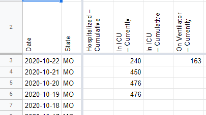
AFTER: 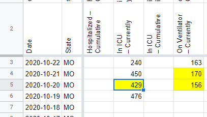
Note: Also updated a value for In ICU - Currently that we missed from 10/20.
#905: [MO] Patch 10/19 Cur. ICU
Issue number 905
hmhoffman opened this issue on October 20, 2020, 11:30 AM PDT
Labels Data quality
State: MO
Dates affected: 10/19
Describe the issue: On 10/19 MO added cur. icu to their dash. Per our policy of not adding new data points on shift, we did not start capturing this value until 10/20. We should patch 10/19 cur. icu from screenshots
Comments
BEFORE: 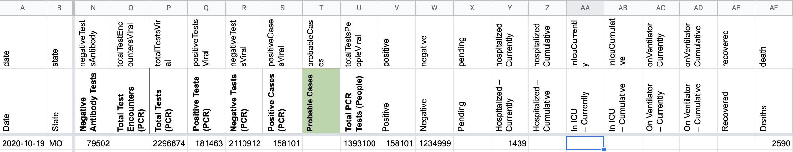
AFTER: 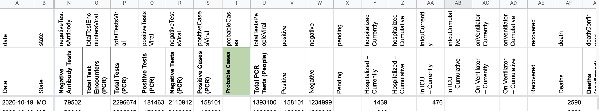
#904: [MO] Backfilling curr. hosp. numbers 9/29 - 10/7
Issue number 904
the-daniel-lin opened this issue on October 20, 2020, 10:45 AM PDT
Labels Backfill Data quality
State or US: Missouri
Describe the problem On 9/28, Missouri updated their dashboard. This new dashboard did not report current hospitalization numbers, so we carried over the value for 7 days. As per CTP policy, we stopped carrying over the current hospitalization value after 7 days. On 10/8, MO returned the value to their dashboard, and we have captured ever since.
Backfilling the days we missed, using the hover-over graph labeled "COVID-19 Total Patients in the Hospital by Day" on the MO website, under the Detail: Healthcare System tab.
Link to data source https://showmestrong.mo.gov/public-healthcare/
As of 10/20 13:43, the values from the graph are: 10/7: 1352 10/6: 1249 10/5: 1201 10/4: 1135 10/3: 1144 10/2: 1184 10/1: 1185 9/30: 1171 9/29: 1219
Comments
BEFORE: 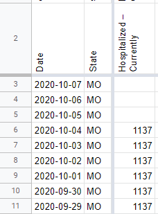
AFTER: 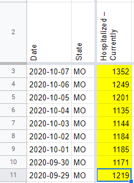
#894: [MO] 10/9 Typo in Positive Cases (confirmed + probable)
Issue number 894
hmhoffman opened this issue on October 10, 2020, 1:53 PM PDT
State: MO
Dates affected: 10/9
Describe the issue: On 10/9 we reported 139164 cases for MO, when we should have reported 139614
Links: https://covid-tracking.slack.com/archives/CUQ4MMTPD/p1602362417156400
Comments
For MO both Positives and Positive Cases (PCR) come from the same place on the dashboard, "Cases to date". On 10/9, data entry recorded 139,164 for Positives and 139,614 for Positive Tests (PCR). So far, as reported, however from the screenshot I believe 139,164 is the correct value and accordingly will update Positive Tests (PCR) to match.
Relevant screenshot: https://covidtracking.com/screenshots/MO/MO-20201009-182247.png
Before: 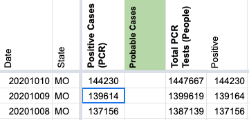
After: 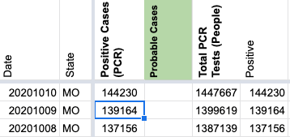
#891: [MO] Patch 10/7 neg. antibody tests
Issue number 891
hmhoffman opened this issue on October 8, 2020, 2:19 PM PDT
Labels Data quality
State: MO
Dates affected: 10/7
Describe the issue: On 10/7 neg. antibody tests was entered incorrectly. We need to patch this mistake using screencaps.
Links: https://covid-tracking.slack.com/archives/CUQ4MMTPD/p1602191791464600
Comments
BEFORE: 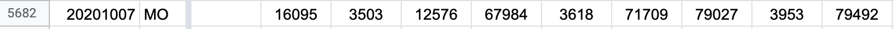
AFTER: 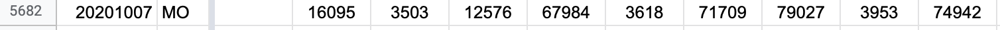
#881: [MO] Capture Total Tests Antibody (People) & Total Tests Antigen (People) values of 10/1
Issue number 881
muamichali opened this issue on October 2, 2020, 8:14 AM PDT
Labels Data quality
State or US: Missouri
Describe the problem Missouri started reporting total individuals tested for antibodies & antigens in a new section of the dashboard and we did not capture it on the shift.
Note The antibody tested individuals value presents a drop from values we previously captured on the old dashboard. We are reaching out to MO to clarify whether the previous number was in people or tests units.
Link to data source https://covidtracking.com/screenshots/MO/MO-secondary-20201001-181830.png
Comments
BEFORE

AFTER 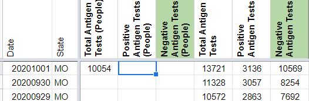
#874: [MO] Update 9/29 Total Tests PCR, Positive Tests PCR, Negative Tests PCR
Issue number 874
muamichali opened this issue on September 29, 2020, 4:14 PM PDT
Labels Data quality
State or US: Missouri
Describe the problem The dashboard changed and we are getting these values from a new source
Link to data source
Provide links to original data sources that we can refer to, like a state COVID website.

Comments
BEFORE 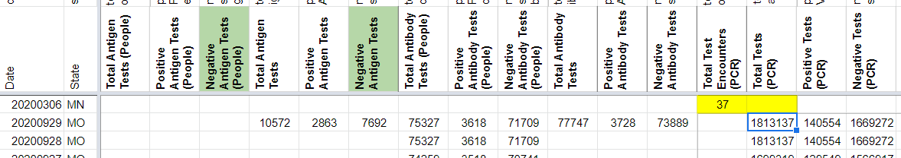
AFTER 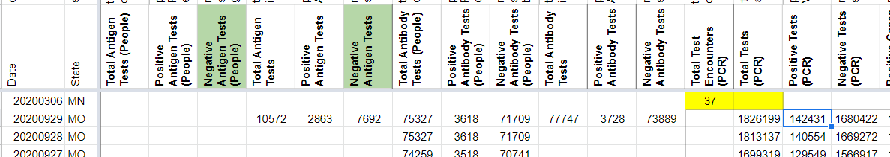
#710: [MO] Re-correct source for Positive (lumped) and Positive Cases PCR (confirmed)
Issue number 710
qpmnguyen opened this issue on July 31, 2020, 7:11 AM PDT
Labels Data quality Historical Data not stale
State or US: MO
Describe the problem After discussion, we decided to revert the source for MO total cases and confirmed cases back to the original source on the "Overview" tab of the dashboard http://mophep.maps.arcgis.com/apps/MapSeries/index.html?appid=8e01a5d8d8bd4b4f85add006f9e14a9d
Link to data source Using screenshots to backfill Wednesday (7/29) and Thursday (7/30) and Tuesday (7/28)
Comments
Screenshots 7/30 6pm Screenshot 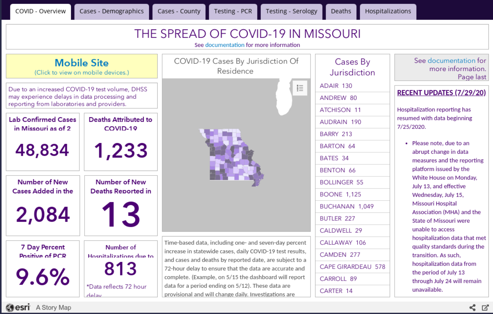 7/29 6pm Screenshot 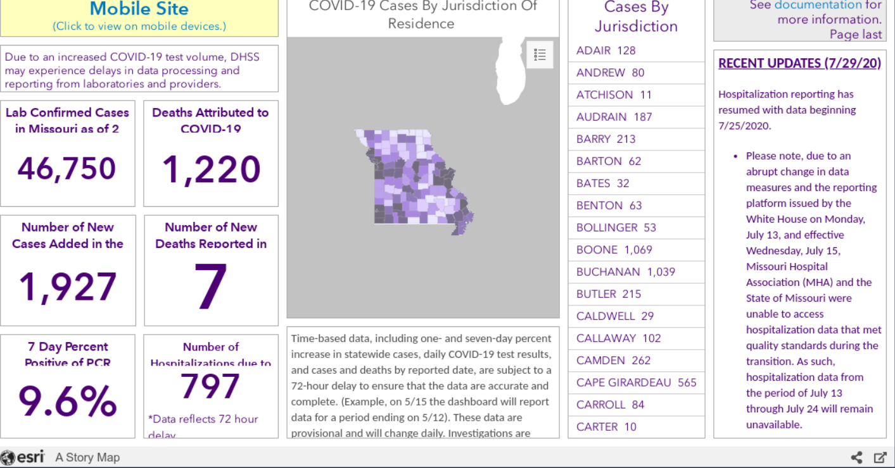 7/28 6pm Screenshot 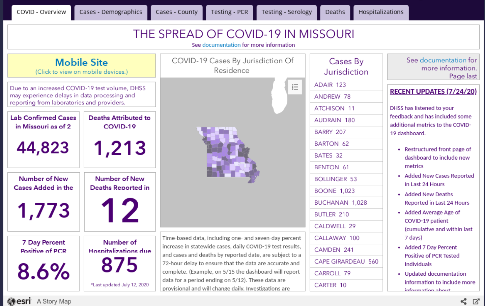
Fixes: BEFORE: 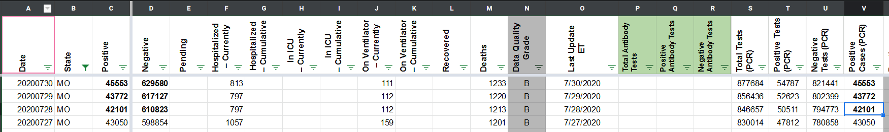 AFTER: 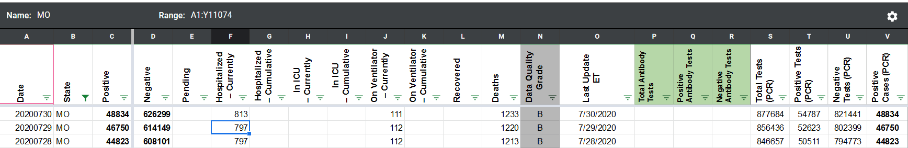
LGTM
#702: [MO] Antibody test reporting in people
Issue number 702
brianskli opened this issue on July 30, 2020, 7:11 AM PDT
Labels Historical Data PCL/SVP Historicals
State or US: Missouri
Describe the problem MO's use of "Individuals" for antibody test counts implies that they report in people, not specimens, tested. States Daily needs to be updated accordingly.
Link to data source http://mophep.maps.arcgis.com/apps/MapSeries/index.html?appid=8e01a5d8d8bd4b4f85add006f9e14a9d
Comments
Our need to transfer to people antibody reporting was verified.
Action items:
1/4: WS2 private note left Before" 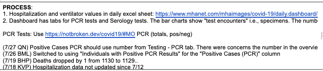 After: 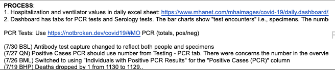
2/4: WS2 source notes changed Before: 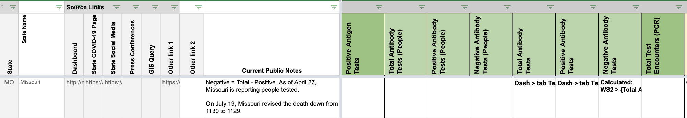 After: 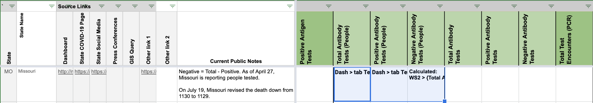
3/4: Data in States Daily copied to correct columns Before: 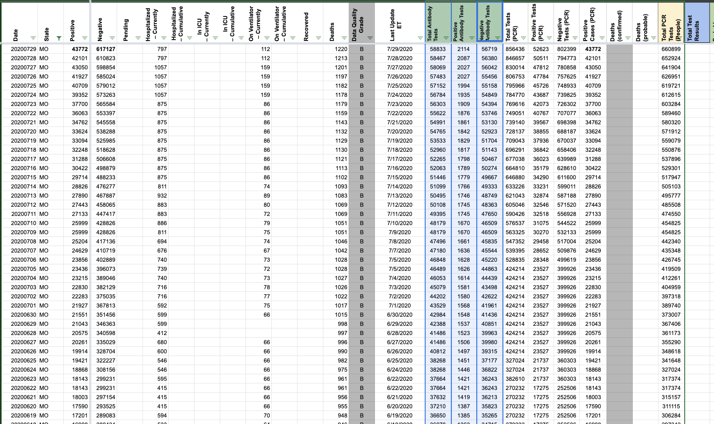 After: 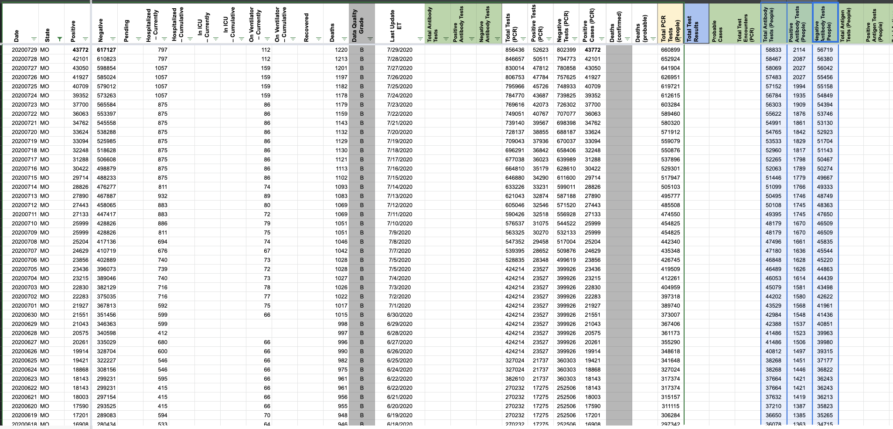
4/4: WS2 pre-filled
#679: [Historical MO]: Switching to using the "Testing - PCR" tab instead of the "Overview" tab on the dashboard for confirmed cases
Issue number 679
qpmnguyen opened this issue on July 27, 2020, 7:08 AM PDT
Labels Backfill Data quality not stale
State or US: MO
Describe the problem We have been using the number of "lab confirmed cases" in the "Overview" tab of the MO dashboard. However, there were concerns they were lumping positive antibody tests in this figure. We propose to use the "individuals with positive PCR results" on the "Testing - PCR" tab instead. This new dashboard links back to May 21st.
Link to data source ArcGIS query link -- hopefully this can be used to backfill
Comments
MO lists a confirmed number in their secondary screenshot history since 3/28 that could be useful.
We don't have the "dashboard view" time series for confirmed cases, we only have a continuously backfilled series available from the state -- which we will not use for backfilling. According to screenshots (e.g., https://covid-tracking-project-data.s3.us-east-1.amazonaws.com/state_screenshots/MO/MO-secondary-20200428-121449.png) they were publishing confirmed case numbers, and this is what we were capturing for positives. Suggestion: fill from positives
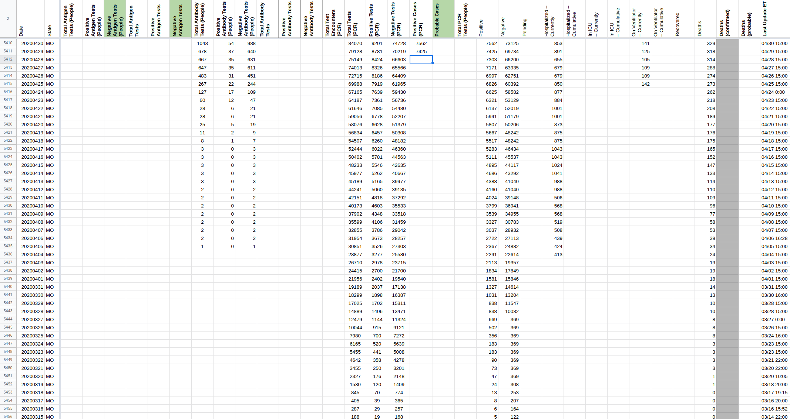 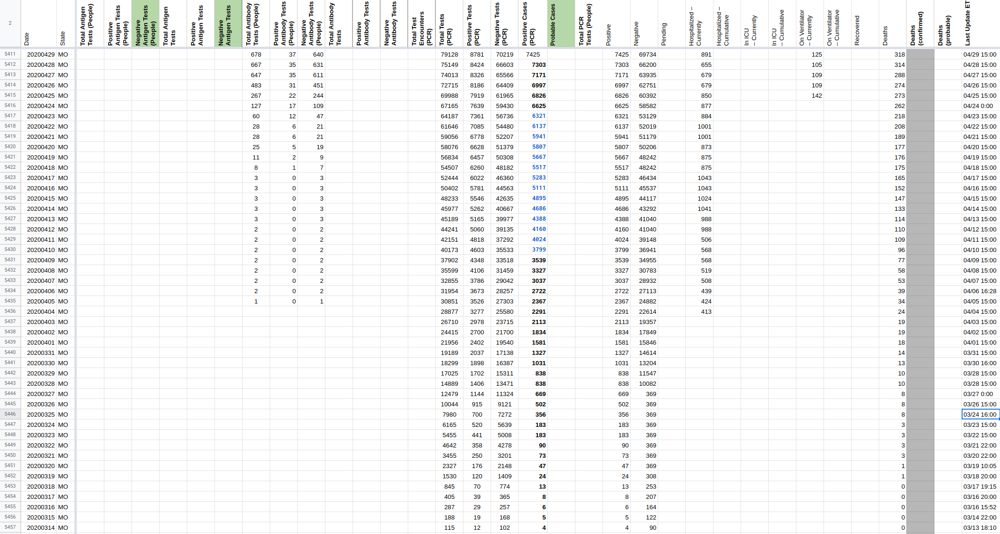
#531: [MO] PCL Historicals and WS2
Issue number 531
jesseandersonumd opened this issue on June 25, 2020, 7:46 AM PDT
Labels Data quality PCL/SVP Historicals
Death values are historically recorded in both the "Deaths" and "Deaths (Confirmed)" columns for MO. However, MO’s death values represent lumped probable and confirmed figures, so they should only be recorded in the main "Deaths" field.
5/12: Started reporting same value for deaths (probable and confirmed) and confirmed deaths
Comments
Confirmed the values matched "Deaths", then removed "Deaths (confirmed) for MO between today and 5/12.
(Jesse updated the source note for Deaths (confirmed) and the private note this morning)
DC'ed by JJA 6/26 9:21:00 a.m. ET
#445: [Historical MO] Missouri is providing PCR & Serology - update historical testing info (they used to lump)
Issue number 445
muamichali opened this issue on May 23, 2020, 1:38 PM PDT
Labels Historical Data
Comments
The information was updated in States Daily from the queries above using this spreadsheet to calculate cumulative from daily numbers.
(Thanks @erfgottlieb @karaschechtman and @camille-le for your work on this)
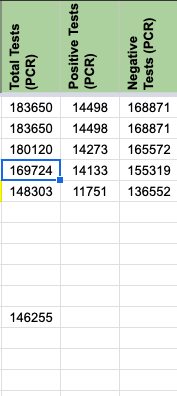
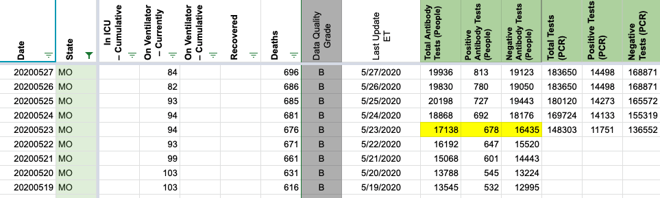
#434: [Historical MO]: Total tests was accidentally put in as negative tests on 5/17
Issue number 434
qpmnguyen opened this issue on May 18, 2020, 1:30 PM PDT
On 5/17, there was an entry error in MO where the number of total tests was put in place of the number of the negative tests.
Entry Negative Tests (5/17) should be fixed from 146255 to 146255-10789 = 135466
Comments
Fixed the issue for you Quang!
Before screenshot

After screenshot

On 5/17 the Total Tests PCR value is blank. It should be updated to 146255
BEFORE 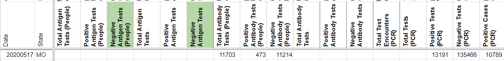
AFTER 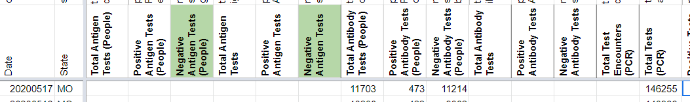
#386: MO Total Tests is a day behind
Issue number 386
JonRyanL opened this issue on May 7, 2020, 2:46 PM PDT
I've been tracking the Missouri data for two weeks now and recently the total tests have been a day behind. The Health Department updates the total positives around 2 PM, but the total gets updated around 5 PM (Central). I think the problem was they never updated total deaths for 5/2, but since then: 5/3 was 91083 5/4 was 100747 5/6 was 103622 They just updated 5/7 to 108721
Your data has gotten me incredibly interested in the numbers and how they track, thanks!
Comments
Thank you for your input @JonRyanL! MO updated its total tests after our publish time cutoff. If a state updates the number of tests or cases after that time, we catch that update on the following day. So far, the historicals we keep seem to agree with this pattern. We're working internally to best represent this data as well as shifting our time to catch states that update only slightly after our publish time.
#50: MO Numbers Not Updated 3/24
Issue number 50
eschmidt2 opened this issue on March 25, 2020, 7:47 AM PDT
The numbers for Missouri were not updated on the States Daily 4PM ET tab in the spreadsheet. They have updated however on States Current tab so you should have the correct numbers. Can you update the daily tab?
Comments
Hello, MO has been updated as the state provides.
-
[ ] From our Data Logs: 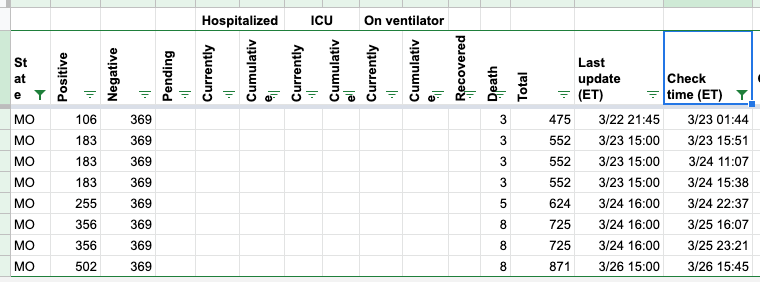
-
[ ] The Daily (only at 4 pm) 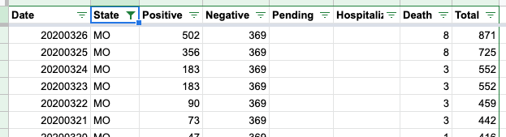
#8: MO data stale
Issue number 8
hammer opened this issue on March 12, 2020, 8:23 AM PDT
Labels Data source
From Chad Huber via email:
Hi there. I noticed your Missouri numbers are incomplete due to Missouri not publishing numbers on their website but rather through an obscure (yet verified) twitter account. I've messaged the Health Director - I was on the Governor's transition team that installed him - in the hopes of pushing him towards the reporting suggested in your Best Practices document. However, until then, I'd be happy to take their tweets and update the numbers for Missouri on a daily basis.
Comments
Here's the tweet: https://twitter.com/HealthyLivingMo/status/1237857732327137285
Here's the tweet: https://twitter.com/HealthyLivingMo/status/1237857732327137285
add chart annotationno chart annotation added because we don't have a chart with these metrics